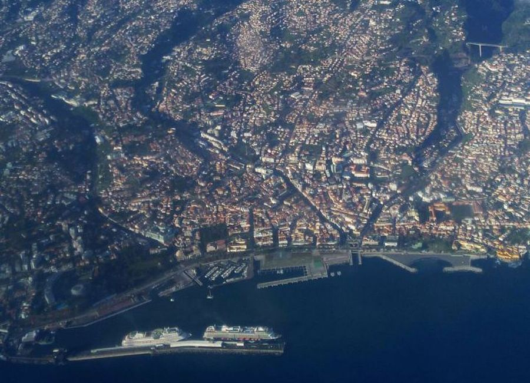
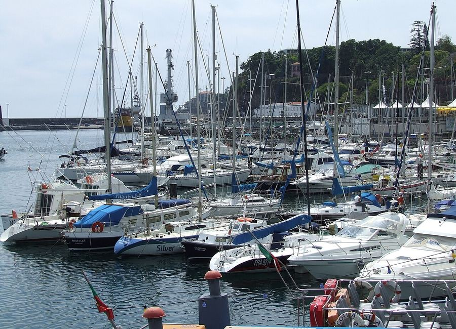

Business Address
Um endereço no Funchal para o seu site, faturas, cartões e registo da empresa. Sem rendas, sem contratos longos.
0%
Funchal · Madeira
Endereço comercial credível, correio tratado e digitalizado no próprio dia, e apoio administrativo quando precisa. Trabalhe de onde quiser.
Quatro serviços, combinados à medida do seu negócio.
Um endereço no Funchal para o seu site, faturas, cartões e registo da empresa. Sem rendas, sem contratos longos.
Recebemos correspondência e encomendas, notificamos por email e guardamos, reencaminhamos ou destruímos conforme pedir.
Abrimos e digitalizamos o correio no próprio dia útil. Recebe o PDF por email — leia a sua correspondência de qualquer parte do mundo.
Apoio administrativo em português e inglês: atendimento de chamadas, tratamento de documentos e ligação com contabilista ou advogado.
Território português e da União Europeia, fuso horário de Lisboa, ligações aéreas diárias à Europa e uma comunidade internacional já instalada.


O seu endereço fica no centro do Funchal, a poucos minutos da marina, das finanças e dos principais escritórios da cidade.
Morada exata e ponto de recolha partilhados após a adesão.
Sim. O endereço pode ser usado como sede social e morada fiscal, desde que concluída a verificação de identidade.
O correio recebido até às 15h é digitalizado no mesmo dia útil.
Sim, encomendas de qualquer transportadora. Guardamos até 30 dias sem custo adicional.
Documento de identificação e comprovativo de morada do titular. Para empresas, também a certidão permanente.
O valor depende do volume de correio e do apoio que precisa. Diga-nos o que procura e enviamos uma proposta no mesmo dia útil.
Sim. Aviso prévio de 30 dias, sem penalizações.
Diga-nos o que precisa e respondemos no mesmo dia útil.
Ou escreva para info@madeiravirtualoffice.com